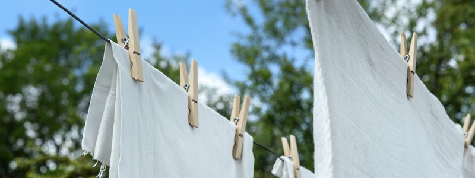
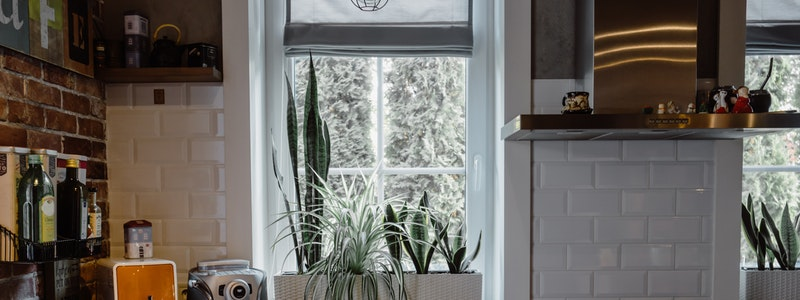

Covid has put a stop on a lot of holiday plans, but this does not mean that we should sit and wait. Sooner or later, we will be able to resume traveling for recreational purposes (!), so why not get ready by typing down a list of things to do before a holiday.
I am going to break the topic down into two articles because of course, you can either go away and enjoy your holiday time in some amazing place (hence look for a task list of things to do to keep your house clean while you are on holiday), or you can be the host looking to get your home ready for somebody coming to spend some holiday time at your place (AirBnb anyone?).
In this article we are going to talk about 8 things to do with your own house before leaving to go away for a holiday. Yay!
1. De-cluttering and general preparation
During the week leading to your departure grab your partner and together spend some time going through your rooms picking up stuff and adjusting those little things that ended up being misplaced. Have anyone in the family think about the clothes they want to bring for the holiday, and have them empty their trash bins and tidy up their desks.
2. Clean the car
One of the days leading to the departure, take one hour to check the state of your car. It might be spotless, or it might not… I suggest you do it especially if you are going to take a driving trip, but even if you are flying somewhere but using the car to get to the airport, it will still make sense. There is nothing better than coming back after the trip to a super clean car.
What to do? Get rid of the empty cans, vacuum the carpets, dust the dashboard, practice your streak free mirror cleaning skills, free up space in the boot. And why not, fill up the tank and check the wheel pressure. A little tip: keep a garbage bag handy in case you’re driving long distances, it will be useful to collect the trash during the journey.

3. Laundry
This comes at number one because it is a fantastic multi-tasking candidate. All you have to do is go through your dirty laundry and then divide it into categories according to your tastes. Remember to take care of the bedsheets and those bathroom towels: you don’t want to give any chances with mildew.
Then start the washing machine, chances are that you have to do a couple of cycles. The good thing is that, while your clothes are being taken care of, you can concentrate on the rest of the tasks. Make the best out of your precious time 😊.
4. Sink and dishes
Another worthy multi-tasking candidate here, if you have a dishwasher. Double check the house for dirty dishes or glasses left lying around. Do the same with eventual stuff in your sink. Be sure to clean thoroughly the surfaces and get rid of all food waste: it is one of the major culprits of bad smell infesting the house while left unattended. And the bad odours will last for a very long time. Once done, wash the drying rack and wipe down the counters.
5. Bathroom scrub
You can opt for a deep cleaning if you have the time, but if not, you should go for a general scrub. If you don’t, chances are that bad smell could linger in the room and from there extend its reach to other parts of the house. Not a great welcome for someone coming back from vacation time.
Pay attention to the areas surrounding the toilet, the bath tub, plugs, shower curtain and glass surfaces. I suggest opening the window for half a day before leaving, just to aerate the room.
6. Make your bed
You are going to thank me for this one. Before leaving, you are pumped and full of life, but once back you will hardly want to raise a finger. And never underestimate the positive effect a well kept and ready bedroom will have on you at that time. So, take 20 minutes to prepare new bed sheets, and vacuum the bedroom floor. You won’t regret it!

7. Clear out the fridge and coffee machine
Focus on your fridge first: you may want to keep an eye on it over the whole week prior your holiday departure. Identify any perishable and use it before it is too late, so you avoid throwing food away. If it looks like you will still some food left, try and reach out to local food banks or Nextdoor communities, or even Facebook groups instead of putting it into the garbage.
If you have the time, clean the fridge shelves. Then, focus on your coffee machine: empty the coffee bag, clean the glass parts, empty the water tank and drip tray, unplug and put aside.
8. Garbage
The last step is to collect the garbage and dispose it completely. Keep the main trash basket handy, then go through each room and double check the bins are empty. At the very end of your cleaning tasks, seal it and dispose it appropriately.
You don’t want to spoil your vacation time and these 8 steps will ensure you come back to a wonderful, relaxing home. The amount of time you are willing (or able to) spend during the days leading to the holiday will entirely depend on your available time, and by all means everyone has different lifestyles, so take the checklist as a general indicator.
Given that we are on St Valentine’s Day, and close to other major holiday time like St Patrick’s Day and Easter 2021, why not suggest your dearest one the best present of them all: direct him/her to this blog article and point out how lovely of it would be if they would offer to engage in these tasks on their own. Alternatively, reach out to us and we can also take care of it 😊
I hope you enjoyed the read and don’t forget to come check again for part 2, which will be published next week in this blog.